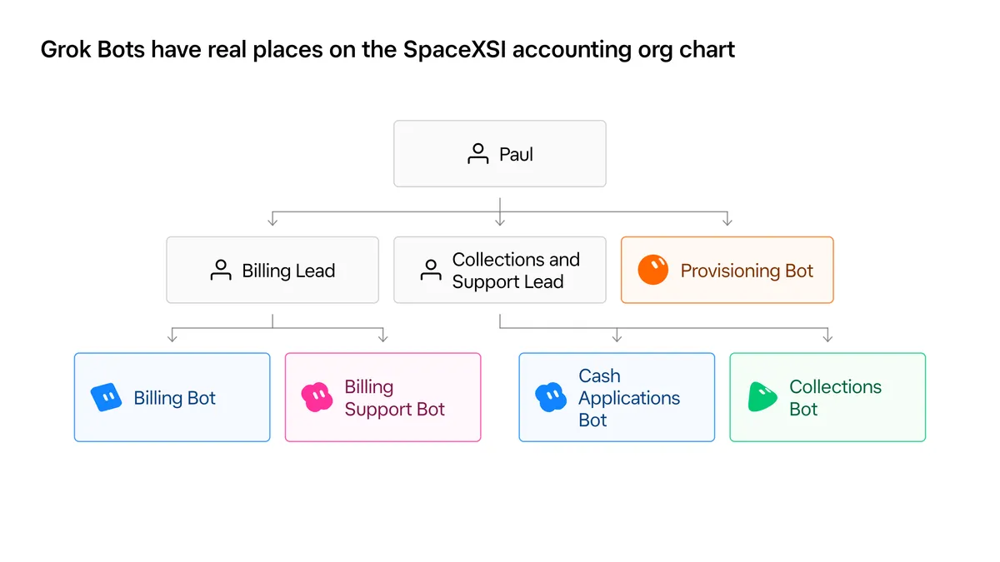

會計團隊的 Bot 編制：五個職位、三週到職、權限分層
導讀原文：xAI 官方部落格，SpaceXSI 會計團隊把五段流程整段交給 Grok Bot 的第一手紀錄——廠商自述案例，含五個 Team Bot 的分工與治理做法
把「職位」而不是「任務」交給 agent：先有作業手冊與受控流程，Bot 才有資格獨立上線。
原文一開始就排除一種做法：不要叫 Bot「幫忙處理各種任務」。每個 Bot 認領一段原本由人負責的完整流程，獨立做到尾，卡住才找人。
原文說初期是試錯才定調：把一個既有、範圍明確的流程整段交出去，比讓 Bot 分散幫忙幾件事有效。
五個 Bot 因此是五個職位，不是五個工具。原文那張組織圖把它們和真人主管排在同一條匯報線上。

一條交易，五段接手
分工沿一條交易走：簽約後開通、開票、業務問帳、入帳對帳、催收。Bot 之間會互相接手——客戶要退款時，Collections Bot 會拉 Billing Bot 與 Cash Applications Bot 一起備案。
Billing Bot 還會先查稅務編號：缺 VAT／GST 就通知業務並給 24 小時補件，不必等開票後被客戶問。
| Bot 與職能 | 端到端做什麼 | 原文的數字與限定 |
|---|---|---|
| Provisioning 開通與關閉帳號 | 比對已簽合約與 Salesforce 紀錄，開通授權、合約到期時收回，完成後在 Slack 通知業務 | 在自家 provisioning 應用內操作，動作留稽核軌跡 |
| Billing 開立發票 | 核對計費紀錄與合約條款才開票；有落差先修計費系統，再通報 CRM 端的紀錄問題 | 開票約 24 小時 → 數分鐘（自報）；折讓、重開票需額外權限與核准 |
| Billing Support 業務的帳務窗口 | 回答 go-to-market 團隊的帳務問題，代改帳單 email、加收件人等例行更新 | 原文估計每日省約 8 小時（自報）；首版花 4–5 週才上線 |
| Cash Applications 入帳對帳 | 每日兩次掃入帳流，套用對得上的付款，追差異、核銷銀行手續費、短付轉催收 | 原本會計 3–4 小時的工作，Bot 約 30 分鐘完成（自報） |
| Collections 應收與客戶詢問 | 盯應收信箱、回客戶帳務問題，退款案串接其他 Bot 備妥資料再送核准 | 約 3 個月訓練（自報）；第一個直接對客戶的 Bot |
先有流程與手冊，才有 Bot
原文點名一個常見誤解：以為把系統權限給 agent，它就會做那個工作。實務上 Bot 需要跟新人一樣的說明文件、到職訓練與持續指導。
原文的判斷很硬：流程沒定義清楚、靠沒寫下來的知識在跑，交給 Bot 也解決不了。
所以順序倒過來。先用 Grok Build 把流程做成有介面的內部應用，介面本身就定義流程怎麼走、哪些動作被允許；Provisioning 用的那一支原文寫的是 Cursor。
Bot 只在這個受控環境裡動手，動作留得下稽核軌跡，人和 Bot 共用同一條流程。
每個 Bot 另有一份 Notion 作業手冊：開票前怎麼核對合約、哪些帳務調整要人核准，都寫在裡面。
每晚 Bot 讀一次刷新知識，並回報與現行指示不符之處。手冊對 Bot 唯讀，只有流程負責人有編輯權；政策一改，改文件再教 Bot 新程序。
| 動作層級 | Bot 可做到哪 | 原文的核准界線 |
|---|---|---|
| 讀取 | 讀工作所需的資訊；可經 Tailscale 連內網工具，不必把系統開上公網 | 存取政策綁在授權該連線的人員身分上 |
| 例行寫入 | 低風險任務獨立執行；改記錄的能力比讀取受限 | 原文未列出哪些任務算低風險 |
| 敏感動作 | 開折讓、退款、改帳單紀錄不能自己放行 | 只有指定人員可授權；其他人只能請 Bot 解釋一張發票 |
本站整理；原文分述於權限與核准一段，未以層級表列出，低風險任務的清單也未公開。
三週上線：先看人做，再放手
原文把上線當新人到職處理：先教工作怎麼做，再讓 Bot 看人做，最後才放手。
- 01第 1 週建知識庫，Bot 旁觀人怎麼做這段流程
- 02第 2 週Bot 提出動作並說明意圖，人逐次核准
- 03第 3 週例行工作獨立執行，例外往上呈報
- 特例Billing Support Bot首版花 4–5 週，比後來的 Bot 久
- 特例Collections Bot約 3 個月：直接面對客戶，多一層身分驗證
本站重繪；週次順序出自原文，原文未給每週的通過門檻，也未說明各週投入的人力。
這三週不是導入期，是風險控制期：知識落差與錯誤在還有人看著的時候修掉。
Collections Bot 就是例子。它盯應收信箱、直接面對客戶；索取帳務資料的人要用 CRM 與計費系統裡的核准信箱比對，長得像的網域不算，比對不過就轉人工。
成效全部是 SpaceXSI 自述：開票從約 24 小時縮到以分鐘計，入帳對帳從 3–4 小時變約 30 分鐘，Billing Support Bot 每日省下約 8 小時。
原文另估計，少了這五個 Bot，這批工作要多一倍以上人力；會計改為管流程、改系統、處理例外。
（編輯觀點：這篇真正給的是治理順序——誰負責流程、誰核准動作、誰改手冊，三題都指向人。）
帶走三件事
別丟任務，交職位。端到端負責才生得出稽核點與例外路線。
手冊與權限要先寫。Bot 唯讀、敏感動作留人核准，才敢放手。
三週不是導入期。那是風險控制期，改錯成本最低的一段。
同一主題的其他館藏
導讀為本站編輯內容（AI 摘解自原文與館藏重點，非官方文件）；成效數字為 SpaceXSI／xAI 自述，無第三方驗證；權限層級表與三週階梯為編輯整理，非原文圖。內容經對照原文的獨立事實審查後發布。